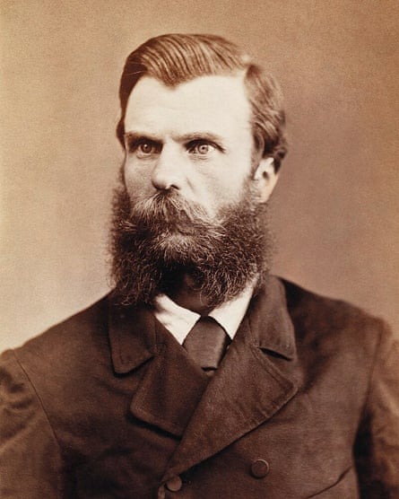
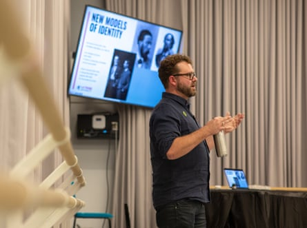

I n 1841, Anne Drysdale invited Caroline Newcomb to live with her on her farm outside Geelong. It was a bold move for the time: the full decriminalisation of homosexuality was 156 years away;the legalisation of same-sex marriage , 176 years.
In colonial Australia, women did not own property,let alone share one, and the same bed.
But for 21 years the couple lived together, building a brick house that still stands today, running a sheep farm and winning agriculture awards, before being buried side by side.
In the annals of history, Drysdale and Newcomb’s story has remained hidden, like that of many other people who form Australia’s LGBTQ+ past.
Now, across the country, researchers and advocates are finding and celebrating Australia’s queer history.
The councils of both the City of Sydney and Yarra in Melbourne are moving towards heritage listing significant LGBTQ+ buildings. In Victoria, Federation University has launched an online digital platform that collates LGBTQ+ stories from the gold rush.
“You often hear this representation as if being queer is a modern invention, but the people have always been here,” says Federation University’s head of social science Dr David Waldron, who led the research project.
The figures include the infamous bushranger Andrew Scott, better known as Captain Moonlite, a well educated and flamboyant outlaw who fell madly in love with fellow inmate James Nesbitt.
Their courtship was conducted between cells, with Nesbitt bringing Scott tea and gifts. After leaving Pentridge prison they lived together in Melbourne before travelling up the country. Starving, freezing and wet, their gang decided to hold up a station in Wagga Wagga after they were refused work.
An archival image of Andrew George Scott, also known as Captain Moonlite.Photograph: Federation University Australia
The police arrived, and in the standoff Nesbitt was shot and killed. A newspaper article from the time said when Scott was brought into the room with Nesbitt’s body he “kissed him, and affectionately wept over him”.
“Will he really die?” he asked. “Oh, he is my only dear friend; but for him, a great many more lives would have been lost.”
Captured, convicted and sentenced to hang, Scott wore a lock of his lover’s hair to the gallows.
The archives are also filled with gender-bending stories, early Australians living their lives, fighting in wars, and marrying people of the opposite gender, all while hiding their sex.
In the 1860s Jack Jorgensen was one of the best horsemen in the country. He was big and strong – and filled with frontier spirit.
A sharpshooter who wooed women and shouted everyone a drink on Friday, Jorgensen had been born a female.
“It was only revealed when they passed,” Waldron says. “Because they were quite muscular, their face was quite scarred from a bullet wound … [and] they had a strong German accent, no one had ever realised.”
With the gold rush era came a moral panic about “women in men’s clothing”, which contrasts with modern panic about “men in women’s clothing”, Waldron says.
“Because the fear was, oh, a woman might be able to earn her own income and not need to have a man, or a woman might be in a position of political power and authority, and no one would know,” he says.
Issues commonly crop up when researching queer history. Often historians have been quick to conclude that couples are friends, or romantic or sexual connection cannot be proven, says Timothy Jones, president of the Australian Queer Archives.
“In the early 19th century, Anne Drysdale and her partner had a farm down on the Bellarine Peninsula, and there were two women, and there was only one bedroom, and they were buried together,” he says.
“Just by looking at their lives, you can tell that they have a romantic, committed relationship.”
Timothy Jones (pictured) says personal artefacts from Australia’s queer past are slowly surfacing.Photograph: La Trobe University
In archives, the LGBTQ+ community often appears in sodomy charges, criminal cases and medical records. There aren’t as many positive historical artefacts, Jones says.
But slowly personal artefacts have surfaced – in scrapbooks, photos and letters.
“Digging around and finding these stories about joyful lives in the past is really, really valuable in providing a different model of seeing … LGBT people,” Jones says.
While most of the collection comes after the sexual revolution in the 1970s, it also includes personal papers and letters that give a glimpse of life back in the early 20th century.
While finding the history can be hard, celebrating the community is not. At present, both Yarra and Sydney councils have identified culturally significant buildings that will soon be heritage listed.
They will join a small number of cities across the globe such as New York and Manchester that recognise important LGBTQ+ buildings with protections.
The City of Sydney is proposing to list the Oxford Hotel, Palms and the Universal nightclub, formerly known as the Midnight Shift, as important places. Yarra is set to list The Laird, the former Star Hotel (now the Ozihouse student hostel) and the community radio station 3CR.
Sean Mulcahy, co-lead at Rainbow Local Government, says councils are now working with archivists and researchers to “ensure that histories and stories of significance to the LGBTIQA+ community are protected”.
“We have always told queer stories, but it is only now that we are starting to rediscover them and their connection to places and objects,” he says.
“It’s one thing to capture LGBTIQA+ heritage, but it’s another thing to be able to protect and celebrate it.”